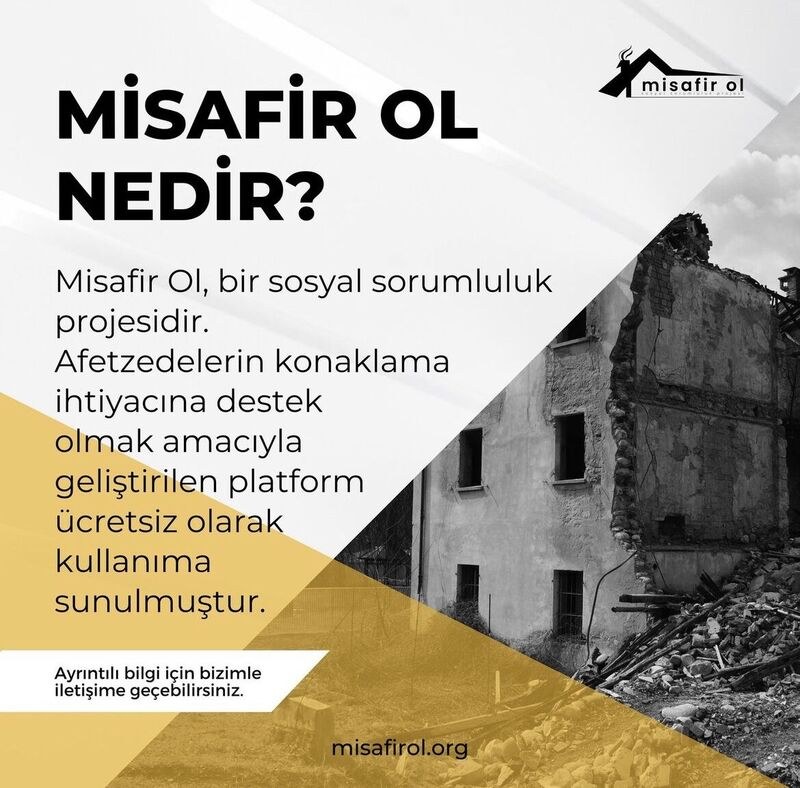

Afet Döneminde Dayanışma ve Yardımlaşma Platformu

misafirol.org, özellikle 6 Şubat 2023 Kahramanmaraş depremleri sonrasında ortaya çıkan, gönüllülük esasına dayalı bir sosyal yardımlaşma platformudur. Projenin temel amacı, barınma ihtiyacı olan afetzedeler ile evini veya boş kontenjanını paylaşmak isteyen gönüllüleri bir araya getirmektir.
Platform, deprem felaketi sonrası sadece 18 saat gibi kısa bir sürede hayata geçirilmiş ve 12.000'den fazla depremzedenin güvenli konaklama bulmasını sağlayarak afet döneminde yapılan en iyi çözüm projelerinden biri olarak kabul edilmiştir.
Ev sahipleri, ağırlayabilecekleri kişi sayısını ve tarih aralığını belirterek ilan verebilirler. Afetzedeler, ihtiyaçlarına uygun konaklama seçeneklerini kolayca bulabilirler.
Barınma imkanının yanı sıra, afetzedeler için ulaşım desteği sağlayabilecek gönüllüler de platform üzerinden iletişime geçebilir.
Platform bünyesinde, depremden etkilenen sahipsiz hayvanlar için de bir pet sahiplendirme bölümü (misafirol.org/petadoptions) oluşturulmuştur.
Tüm hizmetler gönüllülük esasına dayanır ve platform üzerinden herhangi bir ücret talep edilmez. Dayanışma ve yardımlaşma ruhu ön plandadır.
Baştürk Holding Yönetim Kurulu Başkanı Tanju Baştürk'ün proje yöneticiliğini üstlendiği platform; Trair Teknoloji ve Altıkod gibi ekiplerin desteğiyle imece usulü geliştirilmiştir.
Proje, teknoloji şirketlerinin sosyal sorumluluk bilinciyle hareket ederek, kriz anlarında topluma nasıl hızlı ve etkili çözümler sunabileceğinin önemli bir örneğidir.
misafirol.org, sadece bir teknoloji platformu değil, aynı zamanda toplumsal dayanışmanın ve yardımlaşmanın dijital bir yansımasıdır. Platform sayesinde:
Proje, ulusal ve yerel medyada geniş yer bulmuş, afet yönetiminde teknolojinin gücünü gösteren başarılı bir örnek olarak gösterilmiştir. Birçok haber kanalı ve gazete, platformun hızlı geliştirilmesi ve etkili sonuçlarını övgüyle karşılamıştır.
Afet anlarında topluma hizmet etmek, en büyük sorumluluğumuzdur.
misafirol.org'u Ziyaret Et